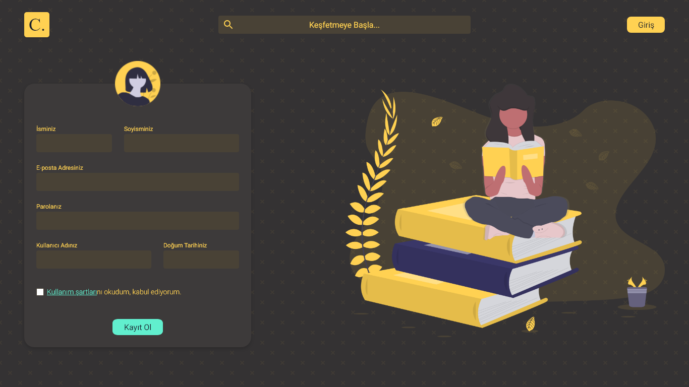

Project Structure
Currently, front-end consists of 5 main projects as below;
| Project | Contents | Dependencies |
|---|---|---|
| Core | Types, Interfaces, Models | - |
| Components | Directives, Components | Core |
| Api | Entities, Api Services | Core |
| Web | Pages | Core, Components, Api |
| Web-e2e | e2e tests for Web | Web |
Color Palette
Cemiyet uses tailwindcss framework and it comes with default color palette.
In addition, applications own palette which extends default palette;
| Preview | Name | HEX |
|---|---|---|
| Aquamarine | #61efce | |
| Champagne | #efdab9 | |
| De York | #81c08b | |
| Don Juan | #584b4f | |
| Eclipse | #3d3a3a | |
| Gulf Stream | #78b0a0 | |
| Kournikova | #ffd152 | |
| Orange Peel | #ff9900 | |
| Schooner | #8e8373 | |
| Space Shuttle | #494236 | |
| Toledo | #343233 | |
| Turbo | #ffc31f | |
| Turquoise | #45edc6 | |
| White Line | #efeae1 |
Components
Following is first draft for the components list that subject to change.
Components under main component module;
- Button Group
- Card
- Collapsible
- Editable Text
- Outline
- Progress Bar
- Spinner
- Table
Components under their own module;
- DateTime
- Date
- Date Range
- Time
- Elements
- Button
- Divider
- Icon
- Tag
- Text
- Forms
- Controls
- Label
- Checkbox
- Radio
- Select
- Slider
- Switch
- Inputs
- File
- Number
- Tag
- Text
- Text Area
- Controls
- Navigations
- Breadcrumb
- Menu
- Navbar
- Tabs
- Tree
- Overlays
- Alert
- Context Menu
- Dialog
- Drawer
- Popover
- Toast
- Tooltip
UI Design
Landing Page
